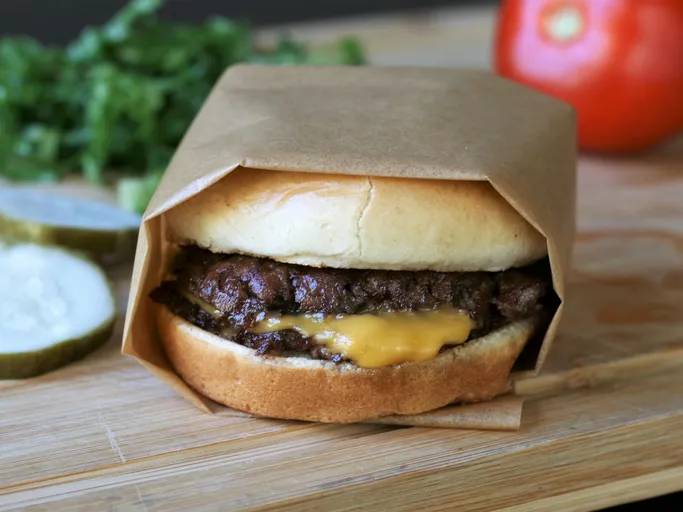

Back To Home
The Classic Smash Burger

When it comes to the ratio of effort to reward, few recipes have as fantastic of returns as the humble smash burger. Two perfectly charred patties topped with american cheese and a simple burger sauce is a short 10 minutes away.
Ingredients
- 8g 85/15 Groundbeef
- 1 Slice American Cheese
- 1 tbsp Mayonaise
- 1 tbsp Ketchup
- 1 tsp Diced Pickles
- Salt, Pepper, Onion Powder
- Hamburger Bun
- 1 tsp High Smoke Point Oil (Basically anything except for butter)
- A Heavy Object to SMASH!
- A metal spatula to scrape burger
Steps
- Form your groundbeef into two balls. You do not need to make these into patties before putting them in the pan. Do not season your patties before forming them into balls.
- Mix your mayo, ketchup, and diced pickles in a small bowl. This will be your burger sauce to put on once cooking is finished.
- Pre-heat your pan over medium-high heat. Once pre-heated, all your oil to the pain. Place both beef balls into the pain, making sure to place them far enough apart that they will not bump into each other when flattened.
- Use your heavy object to smash both patties aggressively into the pan. Special tools are made for this purpose, but the bottom of a large pot also works. You want to push down firmly enough that both balls are smashed to about 1/4 inch thickness. Do not immediately pull the pan away after smashing. You need time for the beef to make good contact with the hot pan to encourage browning.
- After roughly 30 seconds, remove whatever you used to smash your burger. Season the top side with salt and pepper.
- When juiced running out the top of the burger turn clear, use your metal spatula to scrape the burger up from the pan and flip it. Note: Do not use a non-stick pan for smash burgers. You will not get the appropriate amount of browning in a non-stick, and using metal utensils in a non-stick pan is a health hazzard.
- Season the thoroughly browned side with garlic powder and place the american cheese on top. Cover the pan with a lid to produce steam which will melt the cheese.
- Stack your burgers on top of each other and remove from the pan. Spread your burger sauce on your buns and put your stack of two patties inside.
- Enjoy the burger!